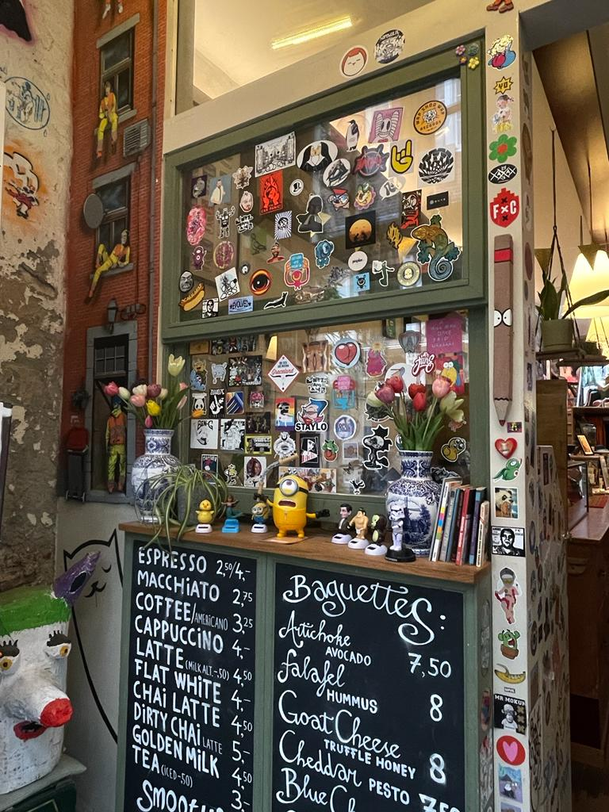
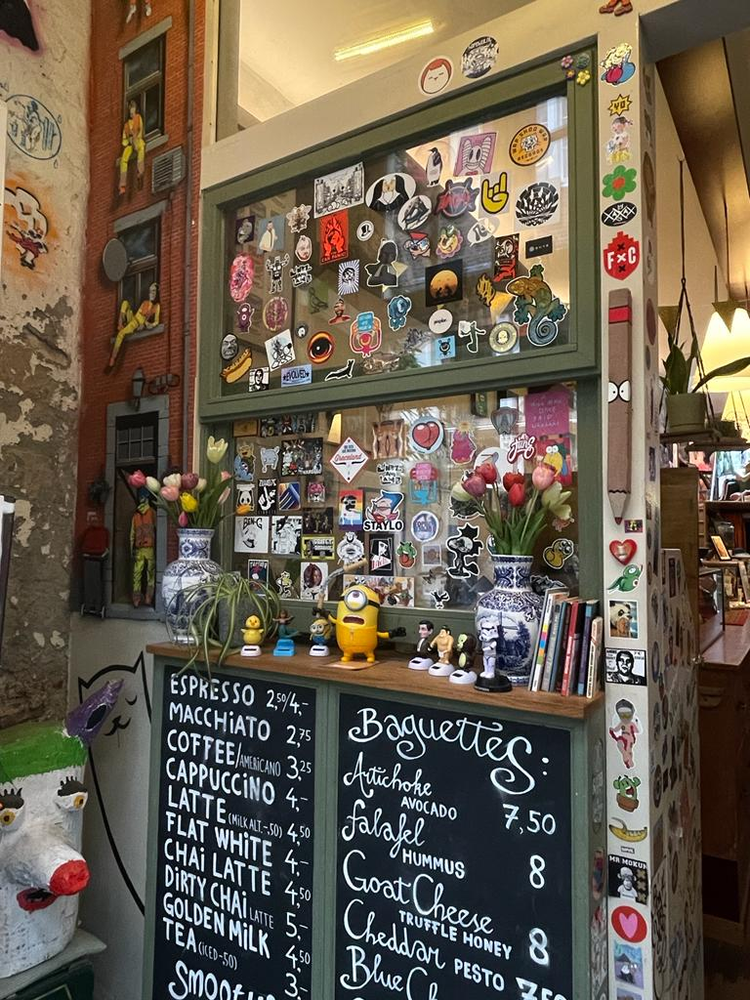
Naast ons waanzinnige kunst bieden wij onze bezoekers ook lokaal eten en drinken.
 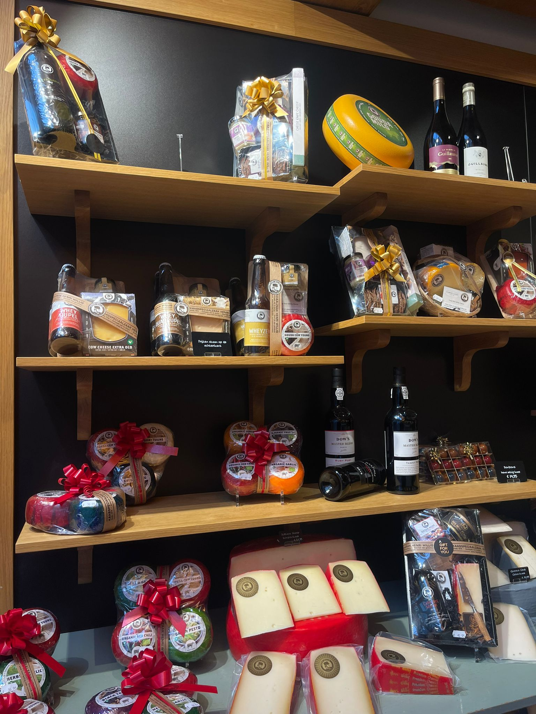
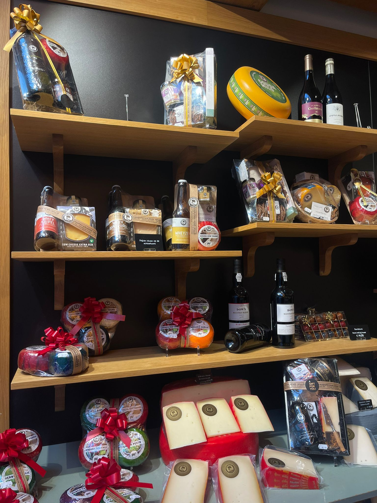

Kwaliteitswijn collectie. Van Chauteau Latour tot Pingus.
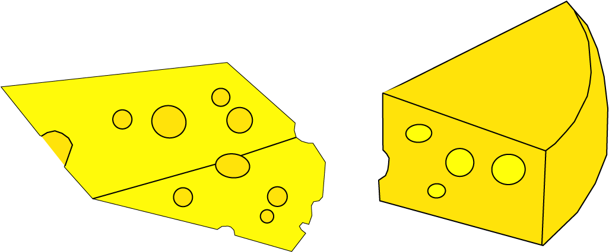 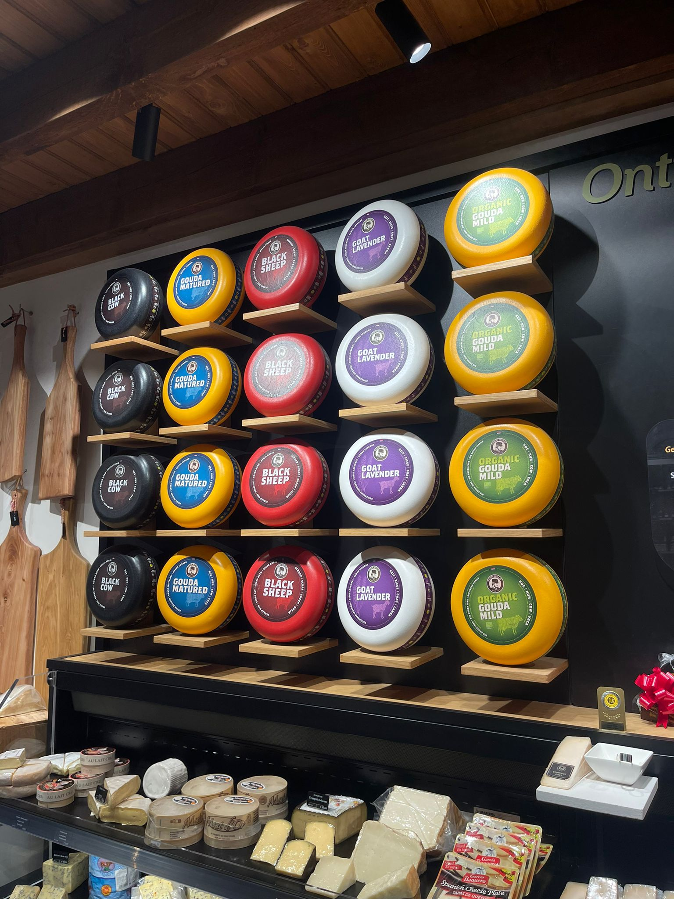
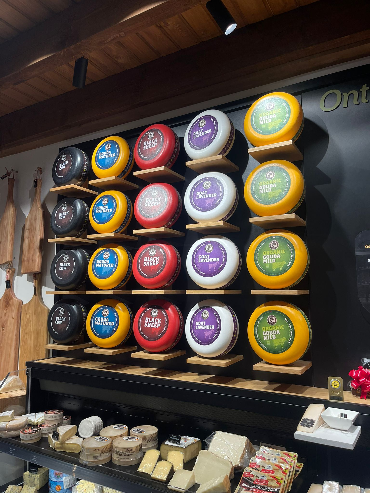
Lekkere kaas selectie van Franse, Nederlandse en Engelse kaas.
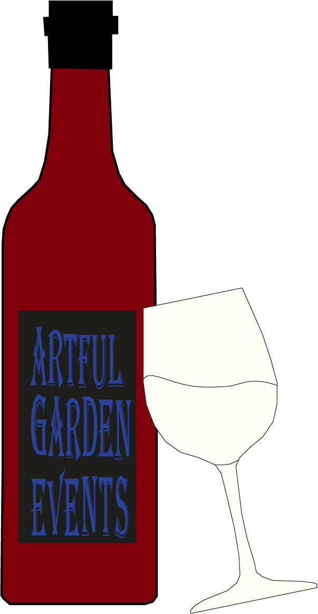 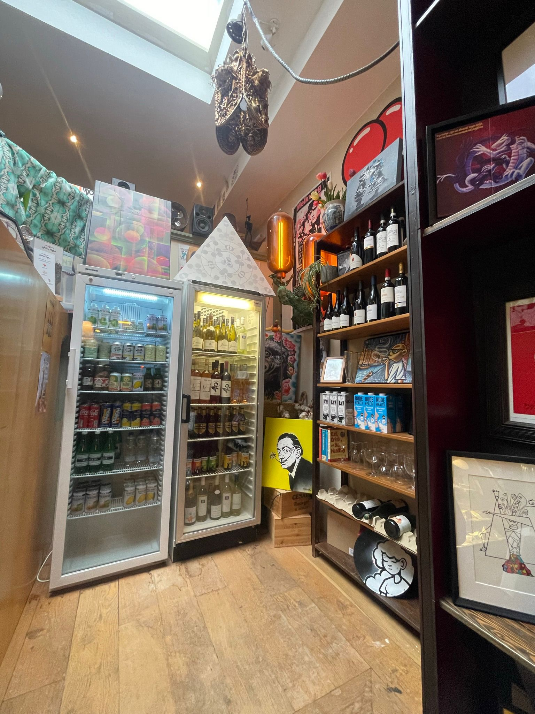
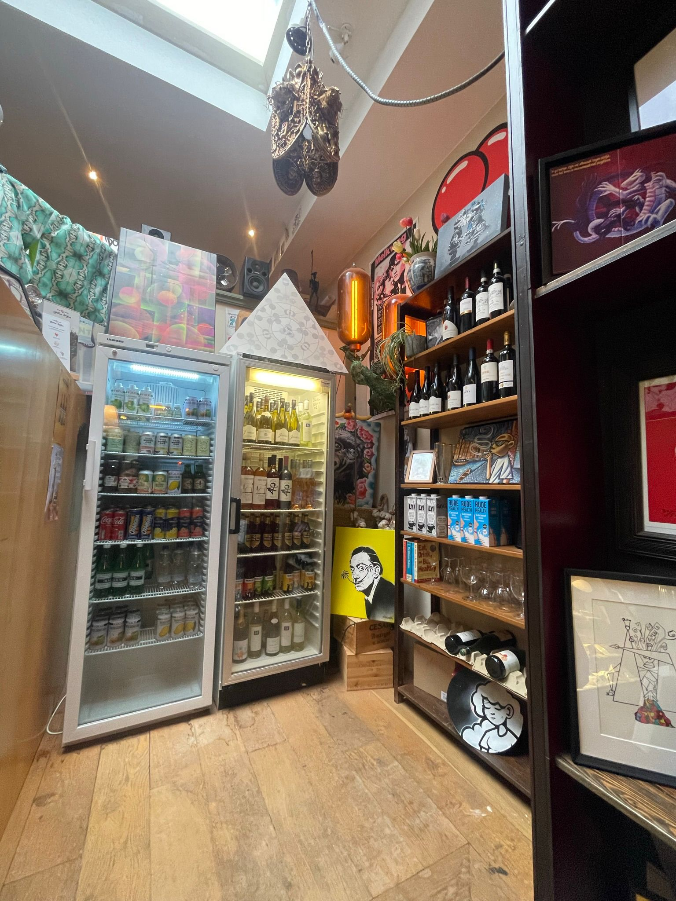
Ook bieden we veganistische, vlees-pf vissandwhiches met keuze uit meergranden, bruin of witbrood.
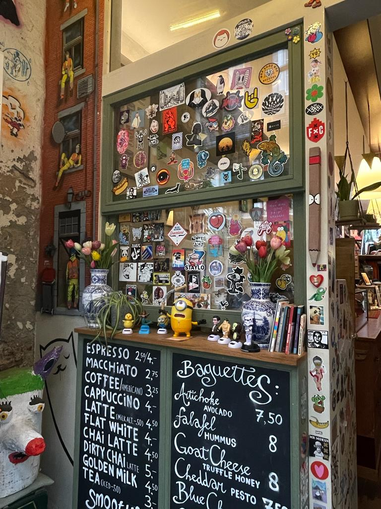